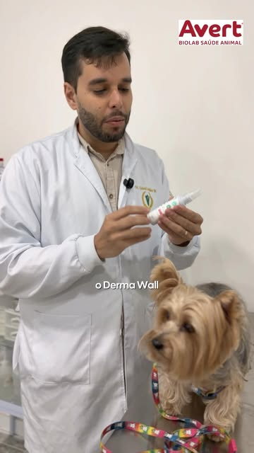
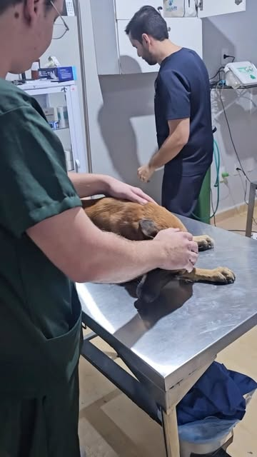

Consultas
Avaliação clínica cuidadosa para cães e gatos, com tempo para ouvir você e explicar cada passo do tratamento.
Caruaru · Recife
Consultas, cirurgias, exames laboratoriais e internamento 24h para cães e gatos. Três unidades entre Caruaru e Recife, com uma equipe que trata seu pet como família.
4,9 no Google · 32 avaliações de tutores


O que fazemos
Tudo o que seu pet precisa num só lugar, com estrutura própria e profissionais capacitados.
Avaliação clínica cuidadosa para cães e gatos, com tempo para ouvir você e explicar cada passo do tratamento.
Procedimentos cirúrgicos com orientação completa de pré e pós-operatório para o tutor ficar tranquilo.
Exames para um diagnóstico rápido e preciso, sem precisar levar seu pet de um lugar para outro.
Na unidade Maurício de Nassau, seu pet fica internado com acompanhamento dia e noite.
Conhecer a unidadeNossas unidades
Escolha a unidade para ver endereço, horário e se ela está aberta agora.
Quem cuida do seu pet
“Gabriel foi um anjo enviado para devolver minhas noites de sono tranquilas.”
Avaliação de tutora no Google
À frente da equipe, o Dr. Gabriel atende com calma e atenção a cada detalhe, junto de profissionais e estagiárias que fazem do atendimento um momento leve para o pet e para o tutor.
Cartão de desconto
Com o cartão de desconto da Amor de Patas você economiza em consultas, exames e procedimentos nas nossas unidades. Peça os detalhes pelo WhatsApp.
Quero o cartãoDicas da Amor de Patas
Alguns cuidados simples que a gente compartilha no Instagram e que fazem diferença no dia a dia.
Espalhe potes pela casa e troque a água sempre para ela ficar fresquinha. Gatos costumam preferir potes largos e longe da comida.
Mantenha uma temperatura agradável, evite mudanças bruscas e não deixe o vento direto nele por muito tempo. Água fresca sempre por perto.
Evite os horários de sol forte, leve sombra e água doce, e cuidado com a areia quente nas patinhas.
Atenção aos sinais de hipertermia: respiração muito ofegante, fraqueza, gengiva muito vermelha ou comportamento diferente. Se notar, leve seu pet a um veterinário. A unidade Maurício de Nassau atende todos os dias até as 22h.
Quem já veio, recomenda
“Atendimento excelente! O Dr. Gabriel é muito atencioso e cuidadoso. Sempre muito bem atendida com minha cachorrinha. Recomendo!”
“A melhor clínica! Profissionais capacitados, espaço apropriado! Confio de olhos fechados.”
“Sem dúvidas, a melhor clínica veterinária que já conheci! Atendimento excelente.”
Fale com a gente agora e agende a consulta na unidade mais perto de você.